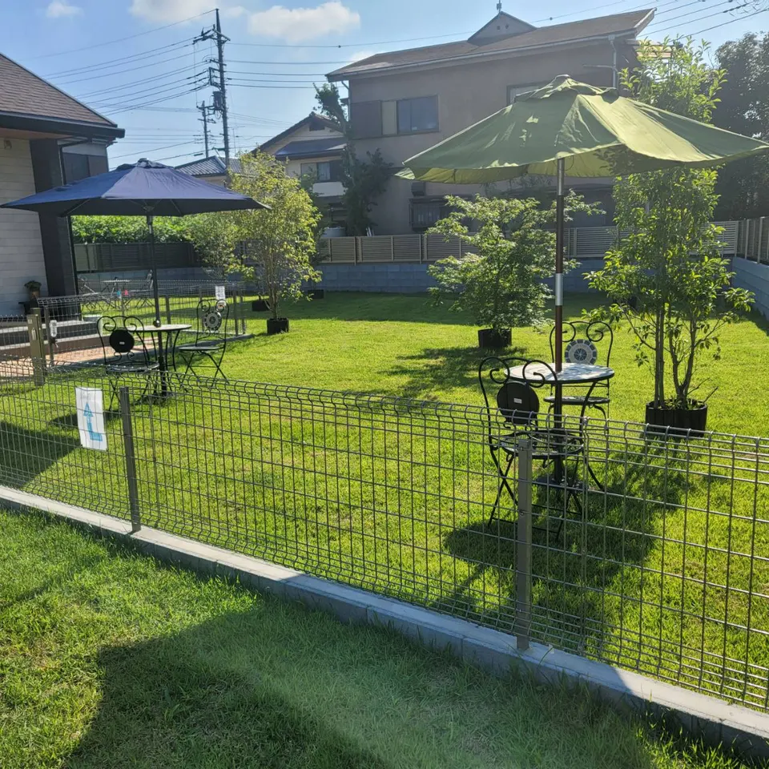
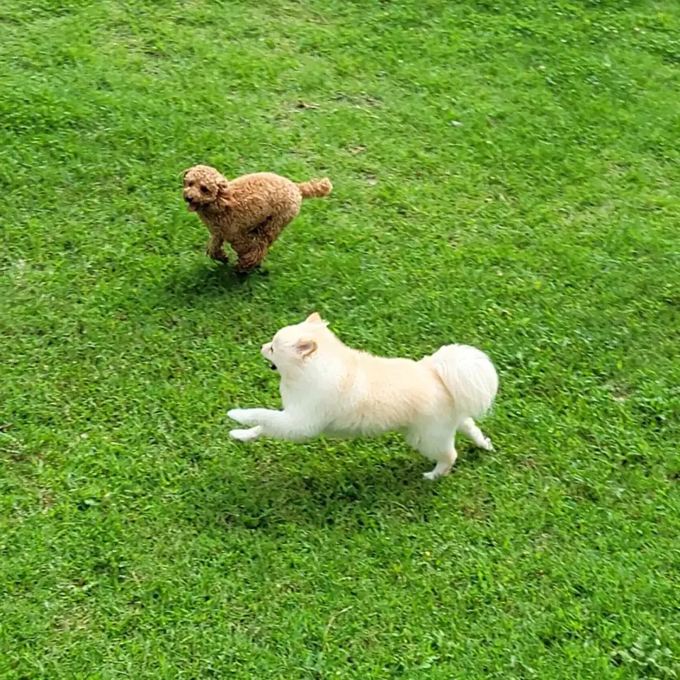

WITH YOUR DOG
きみの「うれしい」も、
大切にしたい。
はじめての方も、いつものお散歩仲間も。
安心して過ごしていただくための、海風のご案内です。

GARDEN & DOG RUN
芝生の感触。
外の空気。
いっしょの時間。
全席テラス席のカフェに、天然芝のドッグランを併設。わんちゃんとの時間を、気兼ねなく楽しめます。
BEFORE YOUR VISIT
ご来店の前に。
01
小型犬優先のドッグランです。
小型犬が安心して過ごせるスペースを大切にしています。大型犬もリード着用でご来店いただけます。ドッグランのご利用については、事前にお店へご相談ください。
柵のあるスペースです。飛び越えなどがないよう、愛犬から目を離さずにお過ごしください。
02
狂犬病・混合ワクチンの接種確認を。
狂犬病・混合ワクチンの接種状況を確認しています。ご来店前に証明書をご用意ください。受診した動物病院への電話で確認できる場合もございますので、お困りの際はご相談ください。
03

FEEL AT HOME
おなかも、気持ちも、
満たされる一日に。
わんちゃん用の手作りメニューや、ハンドメイドのお洋服・お散歩バッグもございます。
愛犬のこと、はじめてのご来店のこと。気になることはお気軽にご相談ください。
お電話で相談するQUESTIONS & ANSWERS
よくあるご質問
犬を連れていなくても利用できますか？
もちろんご利用いただけます。お食事やお飲み物を楽しみながら、庭のカフェ時間をお過ごしください。
雨の日も営業していますか？
雨の日は臨時休業となります。テイクアウトの営業も行っておりません。最新の営業情報はInstagramでご確認ください。
予約はできますか？
お電話でのご予約を優先して承ります。グループでのご利用は、事前のご予約がおすすめです。070-2218-6869へお電話ください。
TODAY AT UMIKAZE